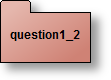
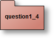
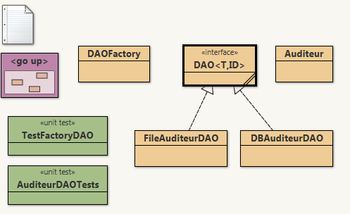

Préalable :
Note : Aucune installation supplémentaire n'est nécessaire, votre projet BlueJ contient déjà l'archive jdom.jar(question2) et hsqldb.jar(question3). Ces API se trouvent dans le répertoire ./+libs.
Au moment de la remise du rapport, lors de la génération de l'archive, (Menu Projet/exporter(jar), n'oubliez pas retirer ces deux fichiers (jdom.jar et hasqldb1.8.jar) ainsi que le répertoire coverage obtenu via l'outil cobertura.
- Rudiments de XML
- Le TP6 revisité
- Persistance :java _sérialisation, XML-JDOM
- Les patrons DAO et DAOFactory
Note : Aucune installation supplémentaire n'est nécessaire, votre projet BlueJ contient déjà l'archive jdom.jar(question2) et hsqldb.jar(question3). Ces API se trouvent dans le répertoire ./+libs.
Au moment de la remise du rapport, lors de la génération de l'archive, (Menu Projet/exporter(jar), n'oubliez pas retirer ces deux fichiers (jdom.jar et hasqldb1.8.jar) ainsi que le répertoire coverage obtenu via l'outil cobertura.
 AST du TP6 et Sérialisation java
AST du TP6 et Sérialisation java
On reprend le TP6 avec ses Expressions arithmétiques, ses Expressions booléennes et ses Instructions.
Rappel : cet ensemble de Classes permet de spécifier les Arbres de Syntaxe Abstraite (AST) de petits programmes du petit langage : 'WhileL'.
Exemple :
Rappel : cet ensemble de Classes permet de spécifier les Arbres de Syntaxe Abstraite (AST) de petits programmes du petit langage : 'WhileL'.
Exemple :
| Programme |
x := 5;
|
| AST |
new Sequence(
|
Compléter les classes suivantes par l'AST correspondant au Programme donné en commentaire et rappelé dans le tableau suivant.
(Remarque : c'est un exercice d'écriture .!.).
(Remarque : c'est un exercice d'écriture .!.).
| Nom de la Classe | Programme (commentaire) |
| AST_Fact |
xxx := n;
|
| AST_Mult1 |
produit = 0;
|
| AST_Mult2 |
produit := 0;
|
| AST_SOM_W |
som := 0;
|
| AST_SOM_F |
som := 0;
|

Classe de tests
Vérifiez par une classe de Test (Junit/BlueJ) que l'évaluation d'objets
instances de toutes vos Classes écrites en Q1.1 donnent les résultats
attendus.
 Sérialisation/Désérialisation
Sérialisation/Désérialisation
Construire la Classe "boite à outils" JAVASerialiseDeserialise qui contient les méthodes statiques :
-
public static void serialjava(IProgr progr, String nomDuFichier){...
Devra générer la sérialisation de 'progr' dans le fichier 'nomDuFichier' -
public static IProgr deserialjava(String nomDuFichier){...
Lit le fichier 'nomFichier' qui doit contenir un objet JAVA de type 'IProgr' sérialisé et retourne cet objet.

Classe de tests
Vérifier par une classe de Test (Junit/BlueJ) que les évaluations de
(Q1.2) et de nouvelles évaluations après sérialisation et
désérialisation donnent des résultats identiques.
Remarque : ATTENTION, avant sérialisation il faut rendre les classes à sérialiser "Serializable"...
Remarque : ATTENTION, avant sérialisation il faut rendre les classes à sérialiser "Serializable"...
 Les visiteurs JDOM
Les visiteurs JDOM
(Retour sur le TP6) : Ajouter les visiteurs JDOM pour 'Expression' ,
'ExpressionBooléenne' et 'Instruction' permettant de générer le code
XML pour les AST de programmes WhileL. Vous Respecterez le format XML
suggéré par le fichier XML de AST_Fact :
<?xml version="1.0" encoding="UTF-8"?>
|
 Sérialisation/désérialisation XML
Sérialisation/désérialisation XML
Construire la classe "boite à outils" SerialiseDeserialiseAST_XML qui contient les méthodes statiques :
-
public static void serialAst2xml(IProgr progr, String nomDuFichier){...
Devra génèrer le code XML de 'progr' dans le fichier 'nomDuFichier' -
public static Element deserialXml2ast(String nomDuFichier) ...
Retourne l'élément-racine du code XML contenu dans le fichier 'nomDuFichier'.
Hélas, par 'deserialXml2ast' on ne récupère pas un Objet de classe
IProgr sauf à utiliser des API (Application Programming Interface)
spécialisées comme les API Beans ou JaxB (qui ne sont pas étudiées dans
le cadre de ce cours). Donc il faut recréer l'AST "à la main"...
 XML vers AST
XML vers AST
Dans la Classe XML2AST complétez la méthode statique
-
public static Instruction xmlInst2ast(Contexte m, Element element)
Permet de reconstruire un ast (cf. Question1) à partir d'un Elément XML.
 Classe de tests
Classe de tests
Vérifier par une classe de Test (Junit/BlueJ) que les évaluations de
(1.2) et de nouvelles évaluations après sérialisation-XML et
désérialisation-XML + reconstruction de l'AST donnent des résultats
identiques.
 Le
patron DAO, Data Access Object
Le
patron DAO, Data Access Object
Le
patron DAO, Data Access ObjectPréalable
Dans la classe de tests DBAuditeurDAOTests,
remplacez la ligne 20 : return getAuditeurDAO("jdbc"); par return getAuditeurDAO("file"); la classe de tests doit s'exécuter sans erreur, vous pouvez également la compléter.
note: Le fichier assurant la persistance doit être format CSV (un fichier de lignes de champs séparé par un ";").
- Lire http://best-practice-software-engineering.ifs.tuwien.ac.at/patterns/dao.html
- Executez la classe de AuditeurDAOTests, celle-ci effectue quelques tests de la classe DBAuditeurDAO, fournie laquelle assure la persistance en base de données d'auditeurs. La base de données utilisée est hsqldb en mode fichier, lisez le code fourni, repérez dans la classe de tests le patron fabrique.
Dans la classe de tests DBAuditeurDAOTests,
remplacez la ligne 20 : return getAuditeurDAO("jdbc"); par return getAuditeurDAO("file"); la classe de tests doit s'exécuter sans erreur, vous pouvez également la compléter.
note: Le fichier assurant la persistance doit être format CSV (un fichier de lignes de champs séparé par un ";").
Architecture des classes en notation BlueJ/UML

Ci-dessous, un extrait de fichier généré :
5;nom_105;prenom_15;nom_15@cnam.fr
6;nom_106;prenom_16;nom_16@cnam.fr
7;nom_107;prenom_17;nom_17@cnam.fr
8;nom_108;prenom_18;nom_18@cnam.fr
9;nom_109;prenom_19;nom_19@cnam.fr
10;nom_110;prenom_20;nom_20@cnam.fr
11;nom_111;prenom_21;nom_21@cnam.fr
12;nom_112;prenom_22;nom_22@cnam.fr
13;nom_113;prenom_23;nom_23@cnam.fr
14;nom_114;prenom_24;nom_24@cnam.fr